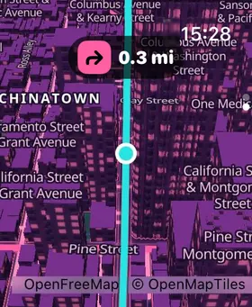

ROAMO 1.0 도움말 센터
무엇을 도와드릴까요?
iPhone, iPad, CarPlay, Apple Watch에서 ROAMO를 쓰는 단계별 안내와 구입 및 개인정보 보호에 관한 답변입니다.
이 번역은 편의를 위해 제공됩니다. 영어 원문과 차이가 있을 경우 영어 원문이 우선합니다.
1분 만에 시작하기
ROAMO는 진짜 턴바이턴 내비게이션 앱이에요. 계정을 만들 필요 없이 열고 바로 출발하세요.
- 위치 접근을 허용하면 ROAMO가 현재 위치를 보여주고 길을 안내해요.
- 검색하거나 말하기: 주소나 장소를 입력하거나, 마이크를 탭하거나, 주유소, 충전소, 카페 같은 주변 카테고리를 고르세요.
- 자동차, 자전거, 도보로 경로를 미리 보고 가장 빠른 길과 가장 짧은 길을 비교하세요.
- 출발을 탭하세요. 큰 회전 카드, 제한 속도 옆의 현재 속도, 음성 안내가 목적지까지 데려다줘요.
22개 지도 월드, 그중 2개는 무료
지도에서 월드 바꾸기를 탭하면 땅, 물, 도로, 라벨, 경로 색까지 모두 새로 그려져요. Block World와 Doodle Notebook은 평생 무료이고, ROAMO Pro로 22개 월드를 모두 쓸 수 있어요.
- 낮 월드와 밤 월드를 고르세요. Neon Night 같은 어두운 월드는 해가 지면 빛나요.
- 여행 중에도 iPhone이나 CarPlay에서 월드를 바꿀 수 있어요.
- 월드마다 전용 코파일럿이 말할 수 있어요. 설정 › 코파일럿 음성에서 고르세요. 클래식은 무료, 캐릭터 음성은 Pro에 포함돼요.


CarPlay에서 ROAMO
게임 스타일 지도, 검색, 턴바이턴 안내를 차량 화면에서. iPhone과 동기화돼요.
- iPhone을 차량에 케이블 또는 무선으로 연결하세요.
- CarPlay 홈 화면에서 ROAMO를 탭하세요.
- 차량 키보드로 검색하거나 최근 장소나 즐겨찾기를 고른 다음 출발을 탭하세요.
- 운전 중에는 지구본 버튼으로 월드를 바꾸고, 종료로 안내를 끝내세요.
차량에 ROAMO가 보이지 않나요? iPhone에서 설정 › 일반 › CarPlay를 열고 차량을 선택한 다음, 사용자화를 탭해 ROAMO를 추가하세요.

잠금 화면과 Apple Watch에서
안내 중에는 앱 밖에서도 다음 회전이 따라와요.
- 실시간 현황: 다음 회전과 도착 시간을 잠금 화면과 Dynamic Island에 표시해요. iPhone 설정 › ROAMO › 실시간 현황에서 허용하세요.
- 위젯: 홈 화면에 ROAMO를 추가하면 한 번 탭으로 집이나 회사로 가는 경로를 시작해요.
- Apple Watch: 회전 카드, 지도, 집, 회사, 즐겨찾기를 손목에서. iPhone의 Watch 앱 ‘사용 가능한 앱’에서 설치하세요.
- Siri: “ROAMO로 집에 가기” 또는 “ROAMO로 근처 카페 찾기”라고 말해 보세요.




나만의 스타일로
- World Studio(Pro): 22개 월드 중 하나에서 시작해 색을 바꾸고, 사진을 텍스처로 쓰고, 장소 아이콘을 직접 그려 보세요. 월드 바꾸기를 탭한 다음 나만의 월드 만들기를 고르세요.
- 포인터: 차량용 게임 포인터를 고르거나 사진으로 나만의 포인터를 만드세요.
- 앱 아이콘: 주행 거리 10, 50, 100, 250, 500, 1,000km마다 대체 아이콘 6개가 열려요. 설정 › 앱 아이콘에서 확인하세요.
- 월드 공유: .roamoworld 파일을 AirDrop, 메시지, 파일로 보내세요. 서버를 거치지 않아요.


여행을 비디오로
안내받은 여행은 모두 내 월드에서 경로를 다시 보여주는 비디오가 될 수 있어요. TikTok, 릴스, 쇼츠에 바로 올릴 수 있어요.
- 여행은 안내 중에 기록되고 iPhone에만 저장돼요. 설정 › 여행 기록에서 끌 수 있어요.
- 도착하면 여행 비디오 만들기를 탭하거나, 나중에 설정 › 여행 및 비디오를 여세요.
- 형식(9:16, 1:1, 4:5, 16:9), 길이, 필터, 제목, 음악을 고르세요.
- 사진에 저장하거나 공유하세요. Pro에서는 워터마크가 없고 내 음악을 쓸 수 있어요.
전면 카메라의 짧은 클립(소리 없음)을 추가할 수도 있어요. 켰을 때만 촬영되고 iPhone에만 저장돼요.

자주 묻는 질문
구매를 복원하려면?
ROAMO를 열고 톱니바퀴 버튼으로 설정을 연 다음 구매 복원을 탭하세요. ROAMO Pro를 구매한 것과 같은 Apple ID로 App Store에 로그인되어 있는지 확인하세요.
구독을 해지하려면?
구독은 Apple이 관리합니다. iPhone에서 설정 › [사용자 이름] › 구독 › ROAMO를 열고 구독 취소를 탭하세요. 다음 기간 요금이 청구되지 않도록 갱신일 최소 24시간 전에 해지하세요. 앱을 삭제해도 구독은 해지되지 않습니다.
무료로 무엇을 할 수 있나요?
Block World와 Doodle Notebook은 평생 무료이며 검색, 주변 장소, 턴바이턴 내비게이션을 쓸 수 있어요. ROAMO Pro로 나머지 20개 월드가 열립니다.
‘지도 서비스 일일 한도에 도달했습니다’가 뜨는 이유는?
검색과 경로 안내는 일일 요청 한도가 있는 공용 지도 서비스를 사용합니다. 한도에 도달하면 잠시 후 다시 시도해 주세요. 한도는 매일 초기화됩니다. 지도 화면과 저장한 장소는 계속 사용할 수 있어요.
언어를 바꾸려면?
ROAMO를 열고 톱니바퀴 버튼을 탭한 뒤 언어에서 선택하세요. ‘시스템 기본값’은 iPhone 언어를 따릅니다. 일부 텍스트는 ROAMO를 다시 시작한 뒤 반영될 수 있어요.
마일과 킬로미터 전환이나 음성 끄기는?
ROAMO 설정의 내비게이션에서 단위와 음성(음성, 알림음, 무음)을 선택하세요. 속도계 숨기기도 여기서 할 수 있어요.
파란 점이 움직이지 않거나 엉뚱한 곳에 있어요.
iOS 설정 › 개인정보 보호 및 보안 › 위치 서비스 › ROAMO에서 위치 접근이 허용되어 있는지 확인하세요. ‘정확한 위치’를 켜 두는 것이 좋습니다. 탁 트인 곳으로 이동하면 GPS가 위치를 더 잘 잡습니다.
ROAMO는 어떤 기기에서 작동하나요?
iOS 17 이상의 iPhone과 iPad, CarPlay, watchOS 10 이상의 Apple Watch에서 작동해요. ROAMO Pro는 한 번 구입하면 같은 Apple ID의 모든 기기에서 쓸 수 있어요.
내 여행과 비디오가 어딘가에 업로드되나요?
아니요. 여행, 여행 비디오, 직접 만든 월드, 저장한 장소는 기기에만 남아요. ROAMO에는 계정도, 이를 받는 서버도 없어요.
유용한 링크
문의하기
info@deeplyai.app로 메일을 보내 주세요. iPhone 모델, iOS 버전, 문제에 대한 간단한 설명을 함께 적어 주시면 좋아요. 보통 영업일 기준 2일 이내에 답변드립니다.
스크린샷은 영어 버전 앱입니다.